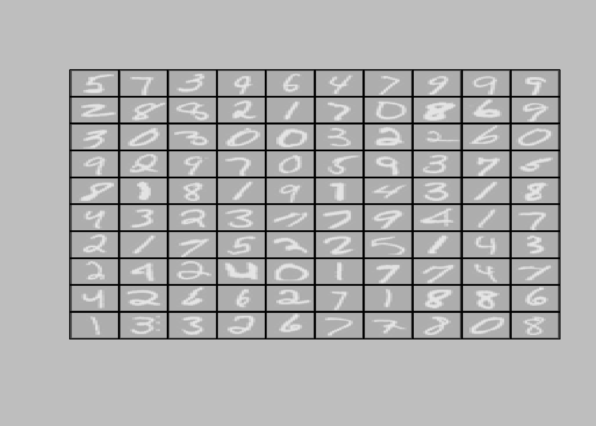

10 ML - Programming Exercise 3
10.1 Introduction: Multi-class Classification
In this exercise, you will implement one-vs-all logistic regression and neural networks to recognize hand-written digits. You will use logistic regression and neural networks to recognize handwritten digits (from 0 to 9). Automated handwritten digit recognition is widely used today - from recognizing zip codes (postal codes) on mail envelopes to recognizing amounts written on bank checks. This exercise will show you how the methods you’ve learned can be used for this classification task.
In the first part of the exercise, you will extend your previous implementation of logistic regression and apply it to one-vs-all classification.
10.1.1 1.1 Dataset
You are given a data set in ex3data1.mat that contains 5000 training examples of handwritten digits.2 The .mat format means that that the data has been saved in a native Octave/MATLAB matrix format, instead of a text (ASCII) format like a csv-file.
After loading, matrices of the correct dimensions and values will appear in your program’s memory. The matrix will already be named, so you do not need to assign names to them.
## [1] 10 1 2 3 4 5 6 7 8 9There are 5000 training examples in ex3data1.mat, where each training example is a 20 pixel by 20 pixel grayscale image of the digit. Each pixel is represented by a floating point number indicating the grayscale intensity at that location. The 20 by 20 grid of pixels is “unrolled” into a 400-dimensional vector. Each of these training examples becomes a single row in our data matrix X. This gives us a 5000 by 400 matrix X where every row is a training example for a handwritten digit image.
\[\begin{align} \begin{bmatrix} - (x^{(1)})^{T} - \newline - (x^{(2)})^{T} - \newline . \newline . \newline . \newline - (x^{(m)})^{T} - \end{bmatrix} \end{align}\]
The second part of the training set is a 5000-dimensional vector y that contains labels for the training set. To make things more compatible with Octave/MATLAB indexing, where there is no zero index, we have mapped the digit zero to the value ten. Therefore, a “0” digit is labeled as “10”, while the digits “1” to “9” are labeled as “1” to “9” in their natural order.
10.1.2 1.2 Visualizing the data
You will begin by visualizing a subset of the training set. In Part 1 of ex3.m, the code randomly selects selects 100 rows from X and passes those rows to the displayData function. This function maps each row to a 20 pixel by 20 pixel grayscale image and displays the images together. We have provided the displayData function, and you are encouraged to examine the code to see how it works. After you run this step, you should see an image like Figure 1.
displayData <- function(X, example_width=NULL){
if (is.null(example_width)) {
example_width <- round(sqrt(dim(X)[2]))
}
# Gray Image
#image(z, col=gray.colors(256))
# Compute rows and columns
m <- dim(X)[1] ; n <- dim(X)[2] ; example_height <- (n / example_width)
# Compute number of itesm to display
display_rows <- floor(sqrt(m))
display_cols <- ceiling(m / display_rows)
# Between images padding
pad <- 1
# Set up blank display
display_array <- array(-1,c(pad + display_rows * (example_height + pad),pad + display_cols * (example_width + pad)))
curr_ex <- 1
for (j in 1:display_rows) {
for (i in 1:display_cols) {
if (curr_ex > m) {
break
}
max_val <- max(abs(X[curr_ex,]))
display_array[pad + (j - 1) * (example_height + pad) + (1:example_height),
pad + (i - 1) * (example_width + pad) + (1:example_width)] <-
matrix(X[curr_ex,], example_height, example_width) / max_val
curr_ex <- curr_ex + 1
}
if (curr_ex > m){
break
}
}
# Display Image
op <- par(bg = "gray")
#image draws by row from bottom up, but R indexes matrices by column, top down
dispArr <- t(apply(display_array,2,rev))
image(
z = dispArr,col = gray.colors(100), xaxt = 'n',yaxt = 'n'
)
grid(
nx = display_cols,display_rows,col = 'black',lwd = 2,lty = 1
)
box()
par(op)
# return(list(h, display_array))
}
m <- dim(X)[1]
# Randomly select 100 data points to display
rand_indices <- sample(m)
sel <- X[rand_indices[1:100], ]
displayData(sel)